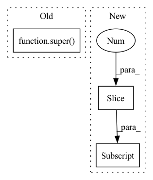

Pattern ID :14938
Before Change
int, _typing.Union[torch.Tensor, _typing.Sequence[int]]
] = {}
self.__init_edge_index_map()
super( NeighborSampler, self) .__init__(
self._NodeIndexesDataset(target_node_indexes),
batch_size=batch_size if batch_size > 0 else 1,
collate_fn=self.__sample,After Change
):
self.__pyg_neighbor_sampler: torch_geometric.data.NeighborSampler = (
torch_geometric.data.NeighborSampler(
edge_index, list(sampling_sizes[::-1] ), target_nodes_indexes,
transform=_neighbor_sampler_transform, batch_size=batch_size,
num_workers=num_workers, shuffle=shuffle, **kwargs
)In pattern: SUPERPATTERN
Frequency: 6
Non-data size: 3
Instances Fragment ID: 49802775
Project Name: thumnlab/autogl
Commit Name: 022bc607ce1604750793856ffe39afc8d40b41a0
Time: 2021-05-12
Author: null
File Name: autogl/module/train/sampling/sampler/neighbor_sampler.py
M Class Name: NeighborSampler
N Class Name: NeighborSampler
M Method Name: __init__(7)
N Method Name: __init__(5)
M Parent Class: TargetDependantSampler,_typing.Iterable
N Parent Class: collections.Iterable,torch.utils.data.DataLoader
M File Name: autogl/module/train/sampling/sampler/neighbor_sampler.py
N File Name: autogl/module/train/sampling/sampler/neighbor_sampler.py
M Start Line: 24
M End Line: 57
N Start Line: 21
N End Line: 33
Before Change
pretraining = kwargs.pop("pretraining", None)
// print("input_ids = ", batch.context.value)
// print("lm_labels = ", batch.answer.value)
return super() .forward(input_ids=batch.context.value, decoder_input_ids=batch.answer.value, lm_labels=batch.answer.value)
else:
return super().forward(**kwargs)
After Change
pad = self.numericalizer._tokenizer.pad_token_id
source_ids, source_mask, y = batch.context.value, batch.context.value!=pad, batch.answer.value
y_ids = y[:, :-1].contiguous()
lm_labels = y[:, 1:] .clone()
lm_labels[y[:, 1:] == pad] = -100
// print({"source_ids":source_ids, "attention_mask": source_mask, "decoder_input_ids":y_ids, "lm_labels":lm_labels})
return self.bart.forward(source_ids, attention_mask=source_mask, decoder_input_ids=y_ids, lm_labels=lm_labels) Fragment ID: 49802774
Project Name: stanford-oval/genienlp
Commit Name: 446c42622083e0413e9437c8fdd4be61e7bb6b13
Time: 2020-11-07
Author: s.j.semnani@gmail.com
File Name: genienlp/models/general_seq2seq.py
M Class Name: Bart
N Class Name: Bart
M Method Name: forward(1)
N Method Name: forward(1)
M Parent Class: nn.Module
N Parent Class: BartForConditionalGeneration
M File Name: genienlp/models/general_seq2seq.py
N File Name: genienlp/models/general_seq2seq.py
M Start Line: 305
M End Line: 307
N Start Line: 312
N End Line: 327
Before Change
activation=None,
max_pool=True,
conv_bias=False):
super( Tokenizer, self) .__init__()
n_filter_list = [n_input_channels] + \
[in_planes for _ in range(n_conv_layers - 1)] + \After Change
[in_planes for _ in range(n_conv_layers - 1)] + \
[n_output_channels]
n_filter_list_pairs = zip(n_filter_list[:-1], n_filter_list[1:] )
self.conv_layers = nn.Sequential(
*[nn.Sequential( Fragment ID: 49802772
Project Name: lucidrains/vit-pytorch
Commit Name: cb6d749821bbf3b0bd17c9e8e64eb343f40b3f69
Time: 2022-10-29
Author: lucidrains@gmail.com
File Name: vit_pytorch/cct.py
M Class Name: Tokenizer
N Class Name: Tokenizer
M Method Name: __init__(14)
N Method Name: __init__(14)
M Parent Class: nn.Module
N Parent Class: nn.Module
M File Name: vit_pytorch/cct.py
N File Name: vit_pytorch/cct.py
M Start Line: 167
M End Line: 187
N Start Line: 173
N End Line: 192
Before Change
def check_states(self, input_current):
Initialise spike threshold states when the first input is received.
super() .check_states(input_current)
if self.threshold.shape == torch.Size([1]):
self.threshold = torch.ones_like(input_current[:,0]) * self.resting_threshold
After Change
def check_states(self, input_current):
Initialise spike threshold states when the first input is received.
shape_without_time = (input_current.shape[0], *input_current.shape[2:] )
if self.state.shape != shape_without_time:
self.reset_states(shape=shape_without_time, randomize=False)
Fragment ID: 49802770
Project Name: synsense/sinabs
Commit Name: 74d0fa76180caea5f504d834bc055887e7ea7683
Time: 2021-11-02
Author: gregor.lenz@synsense.ai
File Name: sinabs/layers/lsnn.py
M Class Name: LSNN
N Class Name: LSNN
M Method Name: check_states(2)
N Method Name: check_states(2)
M Parent Class: SpikingLayer
N Parent Class: LIF
M File Name: sinabs/layers/lsnn.py
N File Name: sinabs/layers/lsnn.py
M Start Line: 73
M End Line: 75
N Start Line: 76
N End Line: 78
Before Change
return super().activate_clients()
def listen_clients(self):
return super() .listen_clients()
class ConnectServer(ClientCommunicationTopology):After Change
recv_message(self.buff)
sender = int(self.buff[0].item())
message_code = MessageCode(self.buff[1].item())
parameter = self.buff[2:]
self._handler.receive(sender, message_code, parameter)
if self._handler.update_flag: Fragment ID: 49802766
Project Name: smilelab-fl/fedlab
Commit Name: 32b1644a007f4632fc195d0550d012bd2288dc4a
Time: 2021-04-03
Author: 928255708@qq.com
File Name: fedlab_core/server/topology.py
M Class Name: ConnectClient
N Class Name: ConnectClient
M Method Name: listen_clients(1)
N Method Name: listen_clients(1)
M Parent Class: EndTop
N Parent Class: EndTop
M File Name: fedlab_core/server/topology.py
N File Name: fedlab_core/server/topology.py
M Start Line: 85
M End Line: 85
N Start Line: 91
N End Line: 105
Before Change
def __init__(self, datafiles, file_callback):
self.file_processor = file_callback
super( GlobalFeatureCounter, self) .__init__(datafiles)
def _collect_statistics(self):
for _f in self.datafiles:After Change
def __init__(self, datafiles, hash_sizes):
self.datafiles = datafiles
self.hash_sizes = np.array(hash_sizes).reshape(1, -1)
self.offsets = np.array([0, *np.cumsum(hash_sizes)[:-1] ]).reshape(1, -1)
def compute(self):
id_freq_map = np.zeros(self.hash_sizes.sum(), dtype=np.int64) Fragment ID: 49802777
Project Name: hpcaitech/freqcacheembedding
Commit Name: 0b17746579cc7a5ac472afec8f16fa4bffa09343
Time: 2022-08-29
Author: 34452939+zxgx@users.noreply.github.com
File Name: recsys/datasets/feature_counter.py
M Class Name: GlobalFeatureCounter
N Class Name: GlobalFeatureCounter
M Method Name: __init__(3)
N Method Name: __init__(3)
M Parent Class:
N Parent Class: BaseFeatureCounter
M File Name: recsys/datasets/feature_counter.py
N File Name: recsys/datasets/feature_counter.py
M Start Line: 44
M End Line: 44
N Start Line: 18
N End Line: 19